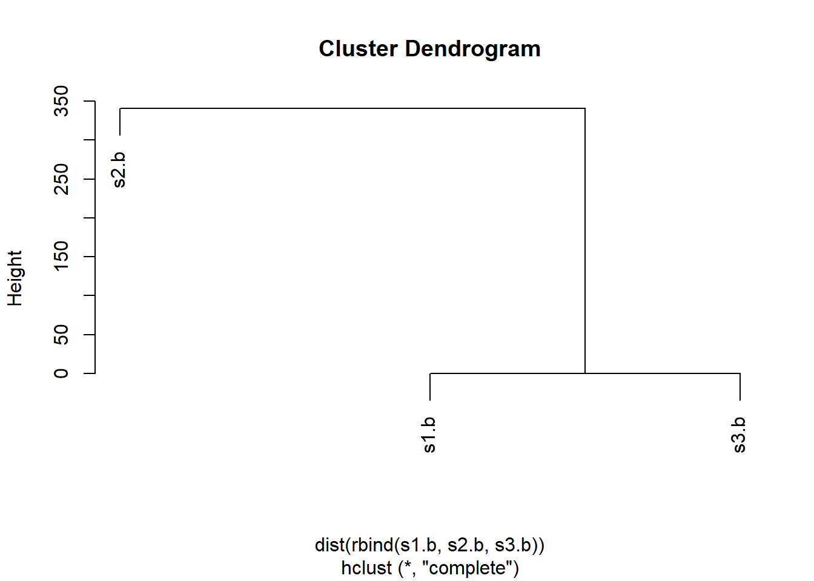
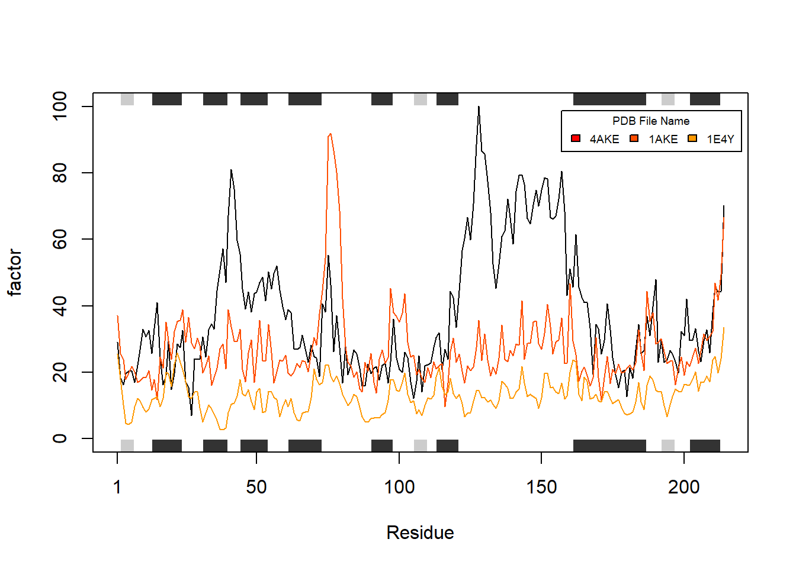

df <- data.frame(a=1:10, b=seq(200,400,length=10),c=11:20,d=NA)
df$a <- (df$a - min(df$a)) / (max(df$a) - min(df$a))
df$b <- (df$b - min(df$a)) / (max(df$b) - min(df$b))
df$c <- (df$c - min(df$c)) / (max(df$c) - min(df$c))
df$d <- (df$d - min(df$d)) / (max(df$a) - min(df$d))
dfclass06 hw
A. Can you improve this analysis code?
Answer
df <- data.frame(a=1:10, b=seq(200,400,length=10),c=11:20,d=NA)
HW6_Q1 <- function(input) {
Q1_function <- function(x, na.rm = TRUE) { #Function that executes repetitive calculation
range <- range(x, na.rm=na.rm) #range(x) returns c(minimum of x, maximum of x)
x <- (x - range[1]) / (range[2] - range[1]) #Overwrite x with result of given equation
}
for(i in 1:length(input)){
Q1_function(input[ ,i]) #Execute function above for all column of input
}
return(input) #Print result of function
}
HW6_Q1(df) #Run functionWarning in min(x, na.rm = na.rm): min에 전달되는 인자들 중 누락이 있어 Inf를
반환합니다Warning in max(x, na.rm = na.rm): max에 전달되는 인자들 중 누락이 있어 -Inf를
반환합니다 a b c d
1 1 200.0000 11 NA
2 2 222.2222 12 NA
3 3 244.4444 13 NA
4 4 266.6667 14 NA
5 5 288.8889 15 NA
6 6 311.1111 16 NA
7 7 333.3333 17 NA
8 8 355.5556 18 NA
9 9 377.7778 19 NA
10 10 400.0000 20 NAB. Can you improve this analysis code?
# Can you improve this analysis code?
library(bio3d)
s1 <- read.pdb("4AKE") # kinase with drug Note: Accessing on-line PDB files2 <- read.pdb("1AKE") # kinase no drug Note: Accessing on-line PDB file
PDB has ALT records, taking A only, rm.alt=TRUEs3 <- read.pdb("1E4Y") # kinase with drug Note: Accessing on-line PDB files1.chainA <- trim.pdb(s1, chain="A", elety="CA")
s2.chainA <- trim.pdb(s2, chain="A", elety="CA")
s3.chainA <- trim.pdb(s1, chain="A", elety="CA")
s1.b <- s1.chainA$atom$b
s2.b <- s2.chainA$atom$b
s3.b <- s3.chainA$atom$b
#plotb3(s1.b, sse=s1.chainA, typ="l", ylab="Bfactor")
#plotb3(s2.b, sse=s2.chainA, typ="l", ylab="Bfactor")
#plotb3(s3.b, sse=s3.chainA, typ="l", ylab="Bfactor")Answer
library(bio3d)
# First, Read s1~s3
s1 <- read.pdb("4AKE") #s1 = kinase with drug Note: Accessing on-line PDB fileWarning in get.pdb(file, path = tempdir(), verbose = FALSE):
C:\Users\louis\AppData\Local\Temp\Rtmp40kUWz/4AKE.pdb exists. Skipping downloads2 <- read.pdb("1AKE") #s2 = kinase no drug Note: Accessing on-line PDB fileWarning in get.pdb(file, path = tempdir(), verbose = FALSE):
C:\Users\louis\AppData\Local\Temp\Rtmp40kUWz/1AKE.pdb exists. Skipping download PDB has ALT records, taking A only, rm.alt=TRUEs3 <- read.pdb("1E4Y") #s3 = kinase with drug Note: Accessing on-line PDB fileWarning in get.pdb(file, path = tempdir(), verbose = FALSE):
C:\Users\louis\AppData\Local\Temp\Rtmp40kUWz/1E4Y.pdb exists. Skipping downloadHW6_Q2 <- function(x) {
x.chainA <- trim.pdb(x, chain="A", elety="CA") #Extract aa with alpha carbon in A chain
x.b <- x.chainA$atom$b # Assign temperature factor of x.chainA as x.b
plotb3(x.b, sse=x.chainA, typ="l", ylab="Bfactor") #plot value b vs. residue
}
HW6_Q2(s1) #run functions
HW6_Q2(s2)
HW6_Q2(s3)
Q1. What type of object is returned from the read.pdb() function?
#read.pdb() returns pdb class in form of data frame.Q2. What does the trim.pdb() function do?
#trim.pdb() extract desired component and returns smaller pdb object in form of data frame.
#For instance, x.chainA <- trim.pdb(x, chain="A") create data frame containing only A chain of protein x.Q3. What input parameter would turn off the marginal black and grey rectangles in the plots and what do they represent in this case?
# In plotb3(x.b, sse=x.chainA, typ="l", ylab="Bfactor"), sse = x.chainA plots secondary structure of given input (x.chainA in this case).
# Hence, black and grey rectangles represents possible secondary structure of x.chainA, and it can be turned off by inputting parameter 'sse = NULL'Q4. What would be a better plot to compare across the different proteins?
#For observing sequential difference across proteins, dot plot could be useful.
#For comparing different bfactors, either 1) plotting multiple line graphs with different colors, or 2) plotting 'difference of bfactor between proteins' vs 'residue' in form of bar graph (where middle of y-axis is zero) would be intuitive.Q5. Which proteins are more similar to each other in their B-factor trends. How could you quantify this? HINT: try the rbind(), dist() and hclust() functions together with a resulting dendrogram plot. Look up the documentation to see what each of these functions does.
hc <- hclust( dist( rbind(s1.b, s2.b, s3.b) ) )
plot(hc)
#rbind - combine s1.b~s3.b into one table, and dist() finds a difference between pairs of proteins among s1~s3. Then, hclust() and plot() creates dendrogram, grouping proteins with similar bfactors. Hence, creating hierarchical cluster shows similar groups with quantified distances as difference.
# In the plot produced, s1 and s3 are more similar in bfactors, while s2 is quite different compared to other two.Q6. How would you generalize the original code above to work with any set of input protein structures?
# 1) Set loaded pdb file as global variable
# 2) Create sub pdb with aa of desired chain/element
# 3) Since $ cannot be used as input, filter aa with desired element
# 4) Replicate factor values in interest
# 5) Generate plot with plotb3(). Specify type of plot, along with enabling secondary structure
# 6) Add lines using lines(). To differentiate colors of each lines, take variable colors as input
# 7) create color vector 'plot_col' for colors input in lines()
# 8) Repeat HW6_Q6() for each proteins in vector 'files'
# 9) Execute factor_calc() for ith protein in 'files'
# 10) For first index of 'flies', execute draw_factor()
# 11) For ith (i>1), excute add_line() using color plot_col[i]
# 12) Generate legend for each lines
# 13) Create vector with protein names to be read in factor_calc()
# 14) Execute main function HW6_Q6()
#Calculate factor values
#Takes pdb file as input, alone with specification of chain, element, and factor in interest
factor_calc <- function(file, chain, element, factor) {
protein <<- read.pdb(file) # 1)
protein.chain <<- trim.pdb(protein, chain = chain, elety = element) # 2)
element_filtered <<- protein.chain$atom # 3)
protein.factor <<- element_filtered[ ,factor] # 4)
}
#For first pdb file, create line plot. Takes protein.factor as input
draw_factor <- function(input_factor){
plotb3(input_factor, sse = protein.chain, typ = "l", ylab = "factor") # 5)
}
# Per additional pdb file, add line on existing plot rather than generating new plot
add_line <- function(next_input, colors) {
lines(next_input, col = colors) # 6)
}
# Main function for executing all functions from reading pdb to drawing plot
HW6_Q6 <- function(file, chain, element, factor){
plot_col <- rainbow(20) # 7)
for(i in 1:length(file)){ # 8)
factor_calc(file[i], chain, element, factor) # 9)
if(i==1){
draw_factor(protein.factor) # 10)
}
else{
add_line(protein.factor, plot_col[i]) # 11)
}
}
legend("topright", title = "PDB File Name", file, fill = plot_col, horiz=TRUE, cex = 0.6, inset = c(0.01, 0.05)) # 12)
}
files <- c("4AKE", "1AKE", "1E4Y") # 13)
HW6_Q6(files, "A", "CA", "b") # 14) Note: Accessing on-line PDB fileWarning in get.pdb(file, path = tempdir(), verbose = FALSE):
C:\Users\louis\AppData\Local\Temp\Rtmp40kUWz/4AKE.pdb exists. Skipping download Note: Accessing on-line PDB fileWarning in get.pdb(file, path = tempdir(), verbose = FALSE):
C:\Users\louis\AppData\Local\Temp\Rtmp40kUWz/1AKE.pdb exists. Skipping download PDB has ALT records, taking A only, rm.alt=TRUE
Note: Accessing on-line PDB fileWarning in get.pdb(file, path = tempdir(), verbose = FALSE):
C:\Users\louis\AppData\Local\Temp\Rtmp40kUWz/1E4Y.pdb exists. Skipping download